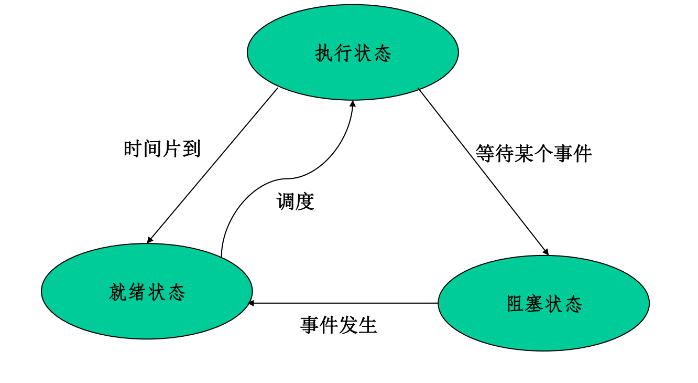
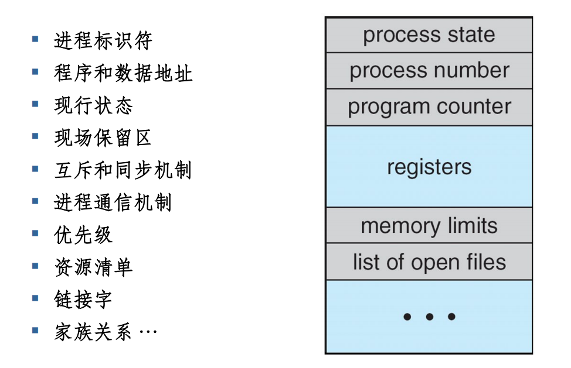
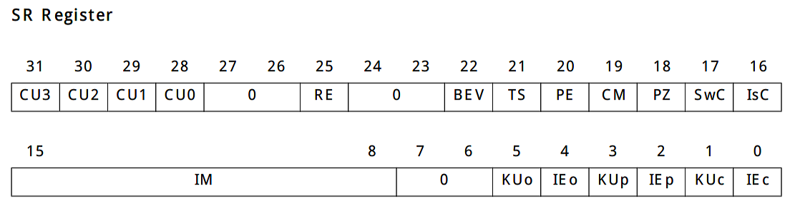
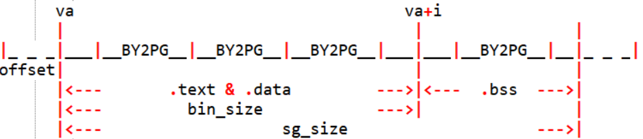
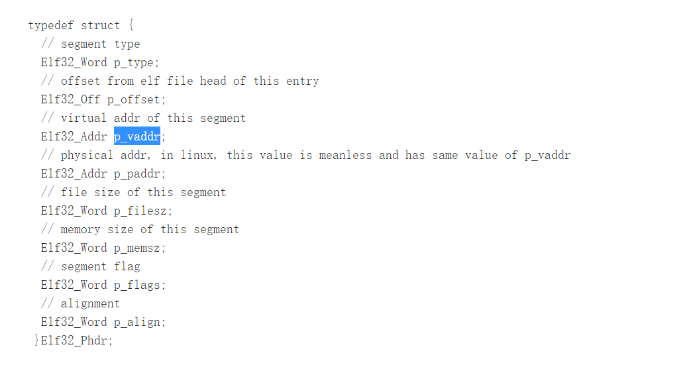

lab3
实验目的
创建一个进程并成功运行
实现时钟中断，通过时钟中断内核可以再次获得执行权
实现进程调度，创建两个进程，并且通过时钟中断切换进程执行
在本次实验中你将运行一个用户模式的进程。
你需要使用数据结构进程控制块 Env 来跟踪用户进程，并建立一个简单的用户进程，加载一个程序镜像到指定的内存空间，然后让它运行起来。
同时，你的MIPS 内核将拥有处理异常的能力。
hint：为了更加深刻理解中断异常处理，建议在做本实验的中断异常部分之前阅读《See MIPS Run Linux》的第三章及第五章，复习计组中学过的MIPS中断异常机制，尤其要深刻理解CP0寄存器的工作原理。
进程控制块
进程既是基本的分配单元，也是基本的执行单元。每个进程都是一个实体，有其自己的地址空间，通常包括代码段、数据段和堆栈。程序是一个没有生命的实体，只有被处理器赋予生命时，它才能成为一个活动的实体，而执行中的程序，就是我们所说的进程。
进程控制块 (PCB) 是系统专门设置用来管理进程的数据结构，它可以记录进程的外部特征，描述进程的运动变化过程。系统利用 PCB 来控制和管理进程，所以 PCB是系统感知进程存在的唯一标志。进程与 PCB 是一一对应的。通常 PCB 应包含如下一些信息：
1 | struct Env { |
- env_tf：定义在include/trap.h中，在进程切换时，会将当前进程的上下文环境保存在env_tf变量中：
1 | struct Trapframe { //lr:need to be modified(reference to linux pt_regs) TODO |
- env_link：机制类似于pp_link，使用此来搭配env_free_list来构造空闲链表
1 |
|
1 |
- env_id：进程独一无二的标识符
- env_parent_id：进程可以被其他进程创建，记录父进程的id
- env_status：
- ENV_FREE:表明该进程处于进程空闲链表中
- ENV_NOT_RUNNABLE:进程处于阻塞状态，处于阻塞状态的进程需要在一定条件下变成就绪状态从而被CPU调度
- ENV_RUNNABLE：进程处于执行或就绪状态，也可能正在运行，也可能正在等待被调度。

注意到就绪状态不会直接进入阻塞状态，阻塞状态不会直接进入执行状态
- env_pgdir：保存了该进程页目录的内核虚拟地址
- env_cr3：保存了该进程页目录的物理地址
- env_sched_link：用于构造调度队列
- env_pri：这个变量保存了进程的优先级

（课程理论图片）
Exercise 3.1
阅读mips_vm_init函数
Exercise 3.2
Overview:
- Mark all environments in ‘envs’ as free and insert them into the env_free_list.
- Insert in reverse order,so that the first call to env_alloc() returns envs[0].
- Hints:
- You may use these macro definitions below:
- LIST_INIT, LIST_INSERT_HEAD
1 | void |
进程的标识
mkenvid：作用就是生成一个新的进程id
1 | u_int mkenvid(struct Env *e) { |
asid_alloc函数：作用是为新创建的进程分配一个异于当前所有未被释放的进程的 ASID。
为什么不采用单纯的自增？可以发现，其中 ASID 部分只占据了 6-11 共 6 个 bit，所以如果单纯的通过自增的方式来分配 ASID 的话，很快就会发生溢出，导致 ASID 重复。
为了解决这个问题，我们采用限制同时运行的进程个数的方法来防止 ASID 重复。具体实现是通过位图法管理可用的 64 个 ASID，如果当 ASID 耗尽时仍要创建进程，系统会 panic。
1 | static u_int asid_alloc() { |
Exercise 3.3
1 | /* Overview: |
1 | int envid2env(u_int envid, struct Env **penv, int checkperm) |
Thinking 3.1
答：通过e = &envs[ENVX(envid)]只能保证获取的进程块的env_id的低十位与envid相同，但是得到的进程块可能已经被替换，即 asid发生了变化，因而必须对比完整的 env_id才能确定得到正确的进程块。
设置进程控制块
进程创建流程：
第一步 申请一个空闲的PCB（也就是Env结构体），从env_free_list 中索取一个空闲PCB 块，这时候的PCB 就像张白纸一样。
第二步 “纯手工打造”打造一个进程。在这种创建方式下，由于没有模板进程, 所以进程拥有的所有信息都是手工设置的。而进程的信息又都存放于进程控制块中，所以我们需要手工初始化进程控制块。
第三步 进程光有PCB 的信息还没法跑起来，每个进程都有独立的地址空间。所以，我们要为新进程分配资源，为新进程的程序和数据以及用户栈分配必要的内存空间。
第四步 此时PCB 已经被填写了很多东西，不再是一张白纸，把它从空闲链表里摘出, 就可以投入使用了。
env.c 中的env_setup_vm 函数就是你在第二步中要使用的函数，该函数的作用是初始化新进程的地址空间，也即是初始化该进程的页目录
Exercise 3.4
1 | /* Overview: |
Thinking 3.2
1.UTOP和ULIM的含义：UTOP代表地址0x7f40 0000 ，是用户进程读写的最高地址，而ULIM代表地址0x8000 0000，是用户进程的最高地址。UTOP到ULIM之间的区域有ENVS、PAGES、User VPT，对应用户进程的进程块及页表等，用户只有读的权限。
2.pdgir[PDX(UVPT)]对应页目录的页目录项，存储的是页目录的物理地址（env_cr3）
3.每个进程都有自己独立的虚拟地址空间，不同的进程的同一虚拟地址有可能映射到不同的物理地址，但是进程的切换保证了进程之间的虚拟地址不会相互影响，而是总能在页表中找到对应于自身的正确的物理地址。
Exercise 3.5
1 | /* Overview: |

第28bit 设置为1，表示允许在用户模式下使用 CP0 寄存器。
第12bit 设置为1，表示4 号中断可以被响应。
R3000 的 SR 寄存器的低六位是一个二重栈的结构。KUo 和 IEo 是一组，每当中断发生的时候，硬件自动会将 KUp 和 IEp 的数值拷贝到这里；KUp 和 IEp 是一组，当中断发生的时候，硬件会把 KUc 和 IEc 的数值拷贝到这里。
其中KU 表示是否位于内核模式下，为1 表示位于内核模式下；IE 表示中断是否开启，为1 表示开启，否则不开启。
而每当rfe 指令调用的时候，就会进行上面操作的逆操作。
最后六位设置为000100的原因：
当运行进程前，运行上述代码到rfe的时候 (rfe 处于延迟槽中)，就会将 KUp 和 IEp 拷贝回 KUc 和 IEc，令status 为 000001，最后两位 KUc，IEc 为 [0,1]，表示开启了中断。之后第一个进程成功运行，这时操作系统也可以正常响应中断
加载二进制镜像
我们需要为新进程的程序分配空间来容纳程序代码。
MemSiz（即sgsize） 永远大于等于 FileSiz（即bin_size）。若 MemSiz 大于 FileSiz，则操作系统在加载程序的时候，会首先将文件中记录的数据加载到对应的 VirtAddr 处。之后，向内存中填 0, 直到该段在内存中的大小达到 MemSiz 为止。那么为什么 MemSiz有时候会大于 FileSiz 呢？这里举这样一个例子：C 语言中未初始化的全局变量，我们需要为其分配内存，但它又不需要被初始化成特定数据。因此，在可执行文件中也只记录它需要占用内存 (MemSiz)，但在文件中却没有相应的数据（因为它并不需要初始化成特定数据）。故而在这种情况下，MemSiz 会大于 FileSiz。这也解释了，为什么 C 语言中全局变量会有默认值 0。这是因为操作系统在加载时将所有未初始化的全局变量所占的内存统一填了 0。
1 | static int load_icode_mapper(u_long va, u_int32_t sgsize, |
“自定义函数”的框架：load_elf() 函数会从ELF 文件文件中解析出每个segment 的四个信息：va(该段需要被加载到的虚地址)、sgsize(该段在内存中的大小)、bin(该段在ELF 文件中的起始位置)、bin_size(该段在文件中的大小)，并将这些信息传给我们的“自定义函数”。
Thinking 3.3
找到 user_data 这一参数的来源，思考它的作用。没有这个参数可不可以？为什么？（可以尝试说明实际的应用场景，举一个实际的库中的例子）
答：user_data的数据类型为让用户自由选择传入的参数类型，
在函数load_icode_mapper中，被传入的user_data被用于这样一个语句中：
1 | struct Env *env = (struct Env *)user_data; |
因此这个所谓的user_data实际上在函数中的真正含义就是这个被操作的进程指针。在load_elf函数中，我们可以看到user_data从函数本身被传入到调用load_icode_mapper中没有改变，那再回溯到调用load_elf的load_icode中，我们发现在调用load_elf时的语句为：
1 | r = load_elf(binary, size, &entry_point, e, load_icode_mapper); |
而其中的e则为传入load_icode中的struct Env *e，因此我们的推测得到证实。
如果没有进程指针，我们的加载镜像的步骤显然不能正常完成。
Exercise 3.6 (实验难点)
第一步 加载该段在ELF 文件中的所有内容到内存。
第二步 如果该段在文件中的内容的大小达不到为填入这段内容新分配的页面大小，即 alloc 了新的页表但没能填满，那么余下的部分用0 来填充。
下图展示的是“最糟糕”的情况：

Thinking 3.4
结合load_icode_mapper 的参数以及二进制镜像的大小，考虑该函数可能会面临哪几种复制的情况？你是否都考虑到了？
答：
1.va起始虚拟地址可能未对齐，此时为了信息安全，应该先寻找该页面对应的page结构体，若没有则创建。将bin起始的size = MIN(bin_size, (BY2PG - offset))字节的内容复制到页面起始偏移offset处。其中， offset = va - ROUNDDOWN(va, BY2PG)；
2.接下来处理binsize以下的内容复制：每次复制 size = MIN(bin_size - i, BY2PG)大小的内容到内存中；
3.完成以上处理后，可能仍有未对齐，我们需要处理bin_size以上的一页大小范围内的未对齐的填零，size = MIN(BY2PG - offset, sgsize - i)，其中 offset = va + i - ROUNDDOWN((va + i), BY2PG)；
4.处理sgsize以下的填零， size = MIN(BY2PG, sgsize - i)。
Exercise 3.7
1 | /* Overview: |
1 | int load_elf(u_char *binary, int size, u_long *entry_point, void *user_data, |

Thinking 3.5
答：1.env_tf.pc中存储的是虚拟地址
entry_point对于每个进程并不相同，因为每个进程的起始地址都可能不相同。这种差异使得进程之间更加独立。
创建进程
Exercise 3.8
1 | /* Overview: |
1 | /* Overview: |
进程运行与切换
6.1 env_run，是进程运行使用的基本函数，它包括两部分：
• 保存当前进程上下文(如果当前没有运行的进程就跳过这一步)
• 恢复要启动的进程的上下文，然后运行该进程。
6.2 两种需要保存的信息：
进程本身的信息
进程周围的环境信息
事实上，进程本身的信息无非就是进程控制块中那些字段，包括
1 | env_id,env_parent_id,env_pgdir,env_cr3... |
这些在进程切换后还保留在原本的进程控制块中，并不会改变，因此不需要保存。而会变的实际上是进程周围的环境信息，这才是需要保存的内容。也就是 env_tf 中的进程上下文。
Thinking 3.6
请查阅相关资料解释，上面提到的epc是什么？为什么要将env_tf.pc设置为epc呢？
答：epc是cp0中的寄存器，用于保存异常发生时指令跳转前的执行位置，将env_tf.pc设置为epc可以保证下次进程收到调度继续执行时可以从上次中断的位置继续。
env_run 的执行流程：
- 保存当前进程的上下文信息，设置当前进程上下文中的 pc 为epc。
- 切换 curenv 为即将运行的进程。
- 调用 lcontext 函数，设置全局变量mCONTEXT为当前进程页目录地址，这个值将在TLB重填时用到。
- 调用 env_pop_tf 函数（定义在 lib/env_asm.S 中的一个汇编函数），恢复现场、异常返回。
Thinking 3.7
关于 TIMESTACK，请思考以下问题：
• 操作系统在何时将什么内容存到了 TIMESTACK 区域
• TIMESTACK 和 env_asm.S 中所定义的 KERNEL_SP 的含义有何不同
答：1.操作系统在进程切换时将当前进程存储上下文环境的env_tf结构体存在了TIMESTACK区域。
2.
1 | .macro get_sp |
从上面那段汇编代码中我们可以看出，将栈指针设在TIMESTACK还是KERNEL_SP与CP0_CAUSE有关，经查阅，在发生中断时将进程的状态保存到TIMESTACK中，在发生系统调用时，将进程的状态保存到KERNEL_SP中。
Exercise 3.10
1 | extern void env_pop_tf(struct Trapframe *tf, int id); |
env_destroy ，其实就是把 old 区域的东西拷贝到当前进程的 env_tf 中，以达到保存进程上下文的效果。
1 | void |
1 | extern void env_pop_tf(struct Trapframe *tf, int id); |
Exercise 3.11
1 | struct Env { |
在进程切换时，我们会将寄存器的值保存在 TIMESTACK 对应的页面。但是在 lab2 初始化页表时，这一页也被设置为了“空闲”状态，所以此物理页面可能会被进程占用导致问题。现在需要同学们修改 page_init 函数来保证这种问题不会发生。
1 |
|
总结
lab3-2-Extra由于汇编代码的原因没做出来，这也反映其实这个lab我没怎么学明白，只能吸取教训，继续加油。
This is copyright.